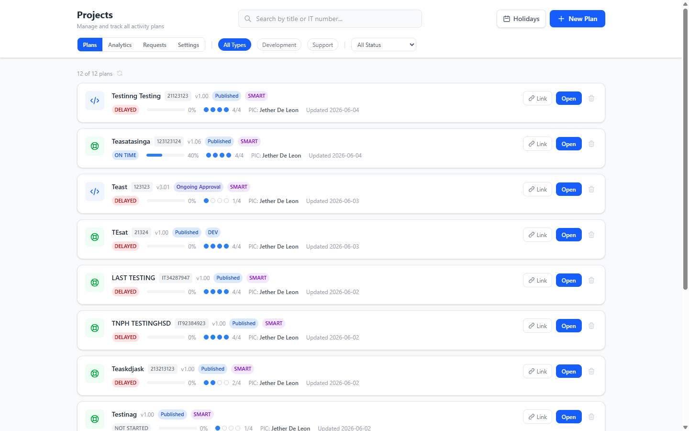
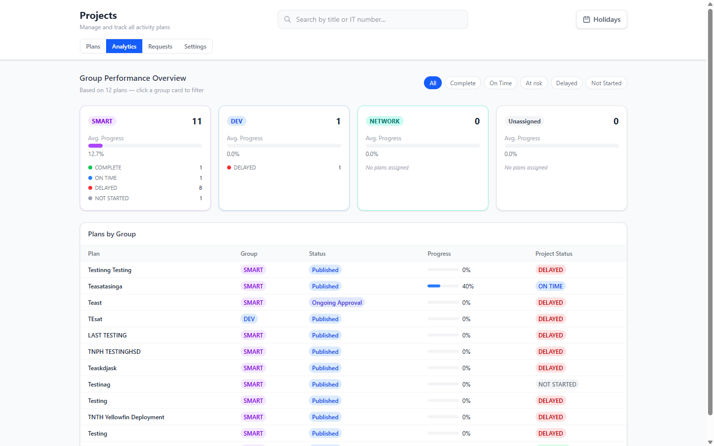
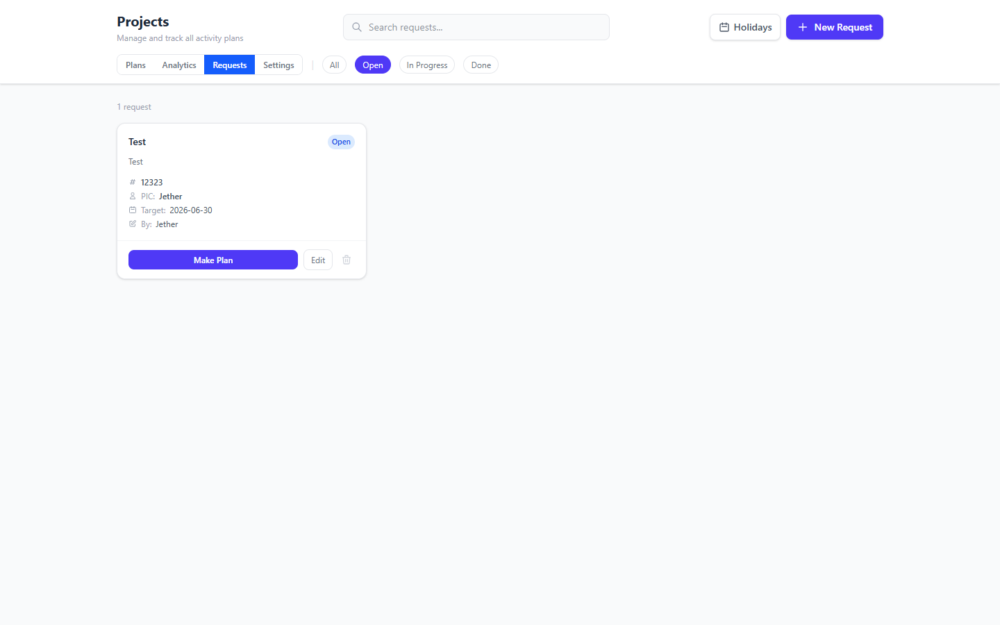
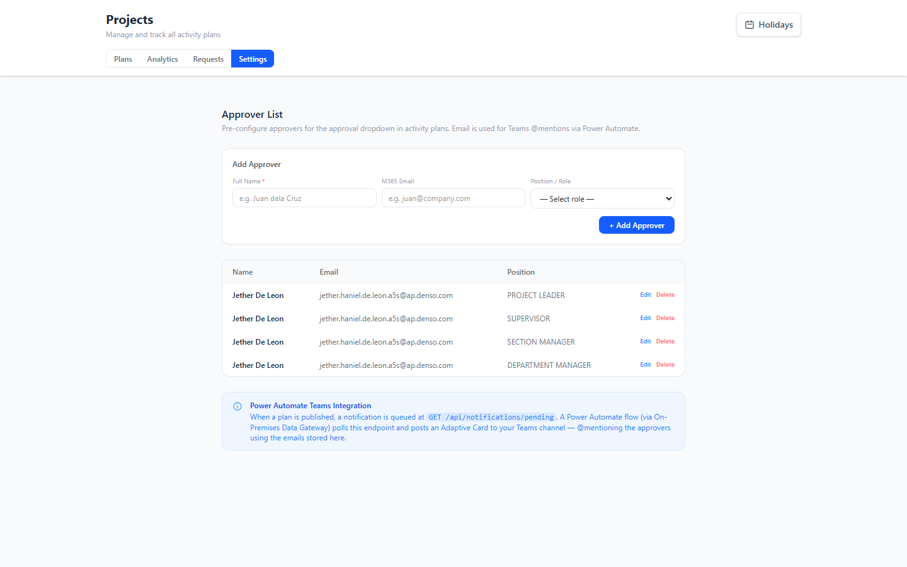
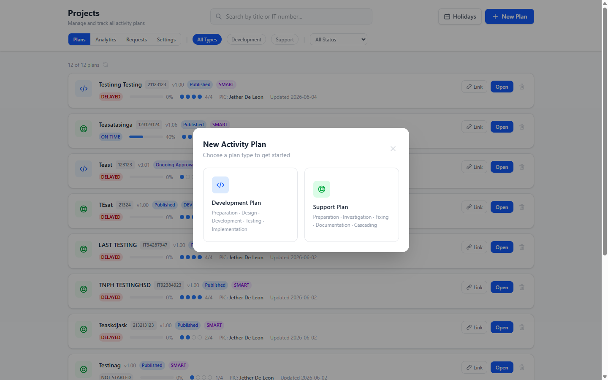
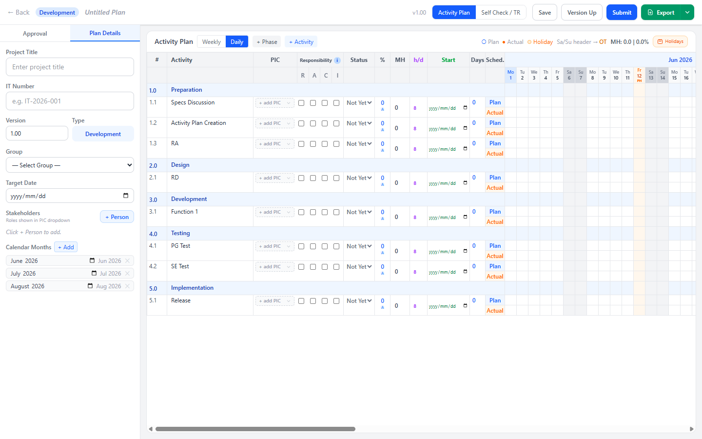
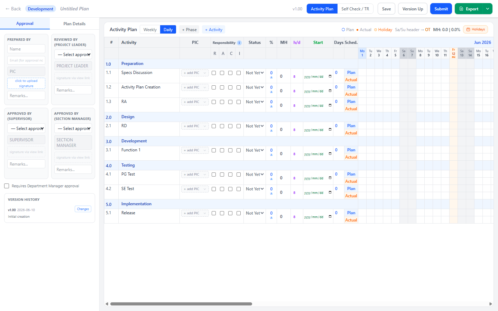
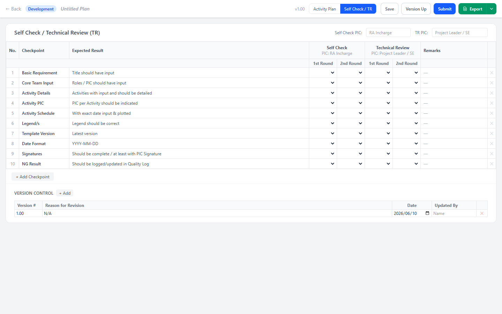
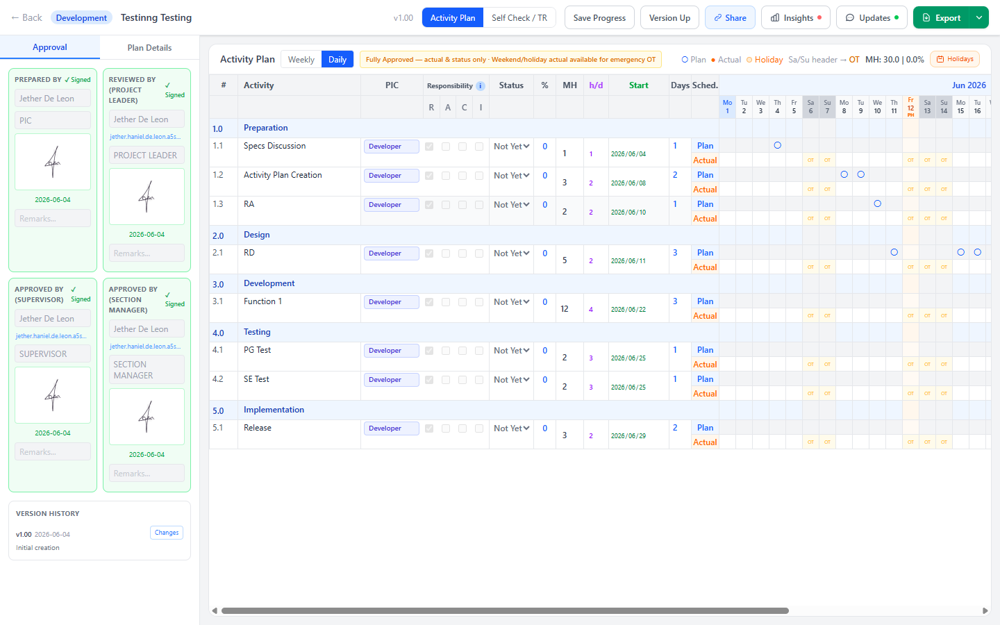

Table of Contents
Overview
The Activity Planning Tool is a web-based system for creating, managing, and tracking IT activity plans. It replaces manual Excel-based workflows by providing structured plan creation, a multi-stage digital approval process, real-time progress tracking, and export capabilities.
| Feature | Description |
|---|---|
| Plan Types | Development Plan, Support Plan |
| Approval Workflow | Multi-stage: Prepared By → Reviewed By → Approved By (up to 4 signatories) |
| Progress Tracking | Daily/weekly day marks, status per activity, insights forecast |
| Exports | Excel (.xlsx) and PDF |
| Notifications | Email notifications at each workflow step; Teams integration via Power Automate |
Accessing the Application
Open a web browser and go to the Activity Planning Tool URL provided by your administrator.
The system opens directly to the Dashboard — no login is required. Plans are shared across all users on the same server.
Dashboard
The Dashboard is the home screen. It contains four tabs: Plans, Analytics, Requests, and Settings.
3.1 Plans Tab
Displays all activity plans. Each row shows the plan title, IT number, version, status, group, progress, PIC, and last update date.

Available Controls
| Control | Function |
|---|---|
| Search bar | Filter plans by title or IT number |
| All Types / Development / Support | Filter by plan type |
| All Status dropdown | Filter by plan status (Draft, Ongoing Approval, Published, etc.) |
| Open button | Open and edit/view a plan |
| Link button | Copy a direct link to the plan for sharing |
| Trash icon | Delete a plan (Draft status only) |
| + New Plan | Create a new activity plan |
| Holidays | Manage the company holiday calendar |
Status Indicators
| Badge | Meaning |
|---|---|
| Draft | Plan is being prepared, not yet submitted |
| Ongoing Approval | Submitted and awaiting signatures from approvers |
| For Revision | Sent back by an approver for corrections |
| Published | Fully approved; progress tracking is active |
| Rejected | Rejected by an approver (terminal state) |
| Cancelled | Cancelled by the PIC (terminal state) |
Project Status Indicators
| Label | Meaning |
|---|---|
| ON TIME | Actual progress matches or exceeds planned progress |
| AT RISK | Slightly behind schedule |
| DELAYED | Significantly behind schedule |
| COMPLETE | All activities are done |
| NOT STARTED | No actual progress recorded yet |
3.2 Analytics Tab
Provides a group-level performance overview. Cards show plan count, average progress, and status breakdown per group (SMART, DEV, NETWORK). Click a card to filter the table below it.

3.3 Requests Tab
A backlog for logging activity requests before a formal plan is created. Useful for capturing requested work items and their target dates.

3.4 Settings Tab
Manages the master list of approvers used in the approval dropdowns across all plans.

Creating a New Activity Plan
Step 1 — Choose Plan Type
Click + New Plan on the top-right of the dashboard. A dialog appears with two options:

| Plan Type | Use When | Default Phases |
|---|---|---|
| Development Plan | Starting a new development project | Preparation · Design · Development · Testing · Implementation |
| Support Plan | Handling support, investigation, or bug-fix work | Preparation · Investigation · Fixing · Documentation · Cascading |
Step 2 — Fill in Plan Details
After choosing the plan type, the Plan Editor opens. Click the Plan Details tab on the left sidebar to fill in the basic information.

| Field | Description | Required |
|---|---|---|
| Project Title | The full name of the project or task | Yes |
| IT Number | The IT ticket or reference number (e.g. IT-2026-001) | Yes |
| Version | Auto-filled (starts at 1.00). Increments on revision. | Auto |
| Type | Development or Support (set at creation, read-only) | Auto |
| Group | Select your team group: SMART, DEV, or NETWORK | Yes |
| Target Date | Expected project completion date | Yes |
| Stakeholders / Persons | Click + Person to add team members. Names appear in the PIC dropdown on the activity table. | Yes |
| Calendar Months | Click + Add to add the months your project spans. The activity schedule grid is built from these months. | Yes |
Step 3 — Set Up Activities & Schedule
Click the Activity Plan tab (top center) to manage the activity table. This is the core of the plan.

Adding Phases and Activities
Activity Table Columns
| Column | Description |
|---|---|
| # | Auto-assigned activity number (e.g. 1.1, 2.3) |
| Activity | Name/description of the task |
| PIC | Click + add PIC to assign a person from the stakeholders list |
| Responsibility (R/A/C/I) | Check boxes to assign RACI roles per activity |
| Status | Dropdown: Not Yet Started / Ongoing / Done / On Hold |
| % | Manual progress percentage (0–100) |
| MH | Man-hours (auto-calculated or manual) |
| h/d | Hours per day for this activity (default: 8) |
| Start | Scheduled start date for the activity |
| Days | Auto-calculated working days from the day marks |
| Plan row | Click calendar cells in the Plan row to mark planned working days (blue) |
| Actual row | Click calendar cells in the Actual row to mark days actually worked (orange, visible on Published plans) |
Calendar View Options
Step 4 — Complete Self-Check / TR
Click the Self Check / TR button at the top of the page. This is the quality checklist that must be completed before submission.

Default Checkpoints
| # | Checkpoint | Expected Result |
|---|---|---|
| 1 | Basic Requirement | Title should have input |
| 2 | Core Team Input | Roles / PIC should have input |
| 3 | Activity Details | Activities with input and should be detailed |
| 4 | Activity PIC | PIC per Activity should be indicated |
| 5 | Activity Schedule | With exact date input & plotted |
| 6 | Legend/s | Legend should be correct |
| 7 | Template Version | Latest version |
| 8 | Date Format | YYYY-MM-DD |
| 9 | Signatures | Should be complete / at least with PIC Signature |
| 10 | NG Result | Should be logged/updated in Quality Log |
Step 5 — Assign Approvers
Click the Approval tab on the left sidebar to configure the approval chain.
Step 6 — Save the Plan
Submitting a Plan for Approval
Once the plan, activity table, and self-check are complete, submit it for approval.
Approval Process (For Approvers)
Approvers receive an email with a direct link to the read-only plan view. They do not need to log in to sign the plan.

How to Sign a Plan
Sending Back for Revision
Revision Process
When a plan is sent back for revision, the PIC receives an email notification and the plan status changes to For Revision.
Tracking Progress on a Published Plan
Once a plan is Published, the PIC can start recording actual progress. The top bar shows additional buttons: Save Progress, Share, Insights, and Updates.
Recording Actual Days Worked
Viewing Insights (Forecast)
Progress Updates Log
Sharing a Published Plan
Exporting Plans
Plans can be exported at any stage (Draft, Approval, or Published) using the Export button (top-right, green).
| Format | Contents | Best For |
|---|---|---|
| Excel (.xlsx) | Color-coded activity table, RACI matrix, approval signatures, self-check checklist. Frozen panes for easy scrolling. | Detailed review, archiving, data analysis |
| Formatted plan document with all activities, schedule, signatures and self-check. Multi-page support. | Printing, formal submission, email attachment |
Managing Requests
The Requests tab serves as an activity backlog for logging work requests before they become formal plans.
Create a New Request
Convert a Request to a Plan
Request Status
| Status | Meaning |
|---|---|
| Open | Logged but not yet acted upon |
| In Progress | A plan has been created from this request |
| Done | Request has been completed |
Settings — Approvers & Holidays
Managing Approvers
Go to Settings tab. The Approver List shows all pre-configured approvers available in the approval dropdowns.
Add an Approver
Edit or Delete an Approver
Managing Company Holidays
Click Holidays (top-right of the dashboard) to open the holiday manager.
Plan Status Reference
Plan Lifecycle
From Ongoing Approval, a plan can also be → Rejected (terminal) or cancelled by the PIC → Cancelled (terminal).
| Status | Who Can Act | What Can Be Done |
|---|---|---|
| Draft | PIC | Edit all fields, save, submit for approval, delete |
| Ongoing Approval | Approvers | Sign (approve), send back for revision, reject |
| For Revision | PIC | Edit all fields, save, resubmit (version increments) |
| Published | PIC | Mark actual days, update status/%, post updates, export, share |
| Rejected | — | Read-only. No further action possible. |
| Cancelled | — | Read-only. No further action possible. |
Quick Reference — Buttons by Plan State
| Button | Available When | Action |
|---|---|---|
| Save | Draft, For Revision | Saves all changes without changing status |
| Submit | Draft, For Revision | Submits for approval; locks editing |
| Version Up | Draft, For Revision | Manually increments version number |
| Save Progress | Published | Saves actual day marks and status updates |
| Share | Published | Copies the read-only view link |
| Insights | Published | Opens the progress forecast panel |
| Updates | Published | Opens the progress remarks log |
| Export | All states | Downloads Excel or PDF copy of the plan |
Activity Planning Tool — Work Instruction | June 2026 | Internal Use Only